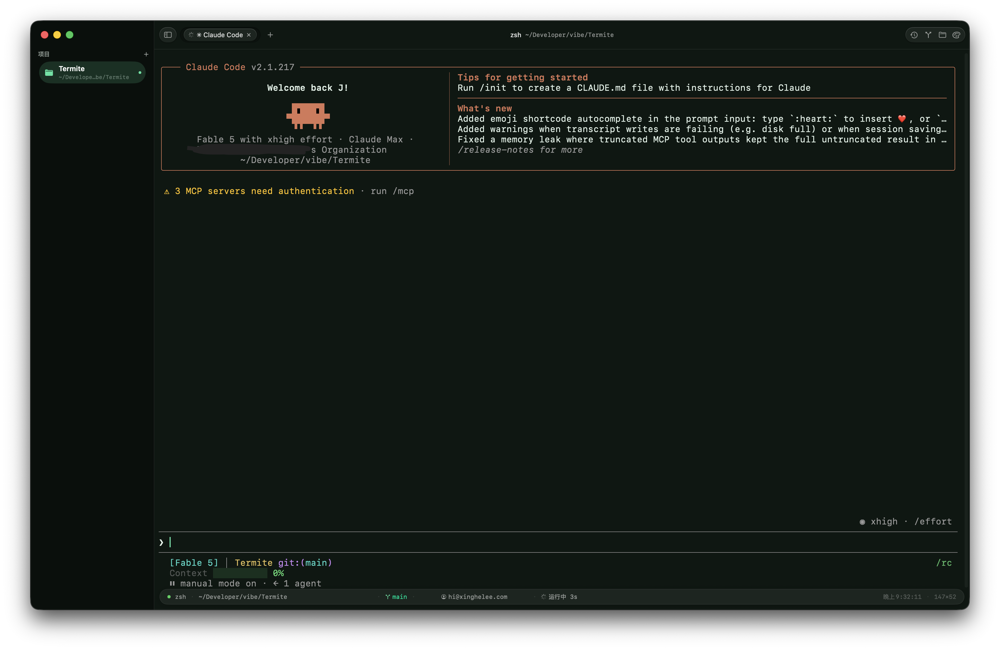

会话保活与完整恢复
PTY 由 termite-ptyhost 守护进程持有,App 的生死与你的 shell 无关。
退出不杀会话 ⌘Q
退出 App 后 shell 继续运行,重新打开无缝接回。⌘W 才是真正结束会话。
多窗口完整恢复
窗口 frame、焦点、最大化状态、标签与分屏结构、scrollback,全量找回。
新标签继承当前目录
在哪个目录开新标签,就从哪个目录开始。
会话录制与回放
asciinema 格式(.cast)录制,内置回放窗口,可拖动进度重演。
Shell 集成,零配置
zsh / bash / fish 自动挂钩 OSC 133 命令标记,每条命令都是一个可操作的单元。
命令间跳转 ⌘↑⌘↓
在命令之间瞬移;⌘⇧C 一键复制上条命令的完整输出。
退出码与耗时
每条命令的退出码、耗时实时显示在状态栏;长命令(≥10s)后台完成时发系统通知。
历史全局搜索 ⌘⇧H
命令历史 SQLite 落盘(剥掉提示符),全局模糊搜索,自动生成日报。
命令时间线 ⌘I
按时间浏览每条命令及其输出,同一命令的两次输出可直接 Diff。
Git 集成
不离开终端,把仓库看清楚、改明白。
Git 面板 ⌘G
SourceTree 式图形提交历史、词级高亮 diff、blame、单文件修改历史、图片改动预览。
完整操作
暂存 / 取消暂存 / 丢弃、分支切换、cherry-pick / revert,全部图形化完成。
状态栏常驻分支
直读 .git/HEAD,零子进程;提交身份就在旁边,点击即可编辑。
独立历史窗口
图形历史可开独立窗口,自由缩放,泳道不断线。

面板与导航
键盘不离手,去哪都是一步。
命令面板 ⌘P
模糊搜索所有动作与主题;⌘O frecency 目录跳转器,⇧⌘E 文件浏览器。
Quake 下拉终端 ⌃⌥⌘Space
全局热键随叫随到(可自定义),无需辅助功能权限。
侧边栏项目切换
常用项目文件夹一列排开,点一下就切;Dock 图标拖入文件夹直接开标签。
端口面板与 CLI
谁占了哪个端口一目了然;termite 命令行工具从任何地方打开新标签。
终端手感
该有的都有,细节不将就。终端引擎 SwiftTerm,Metal GPU 渲染。
无限分屏
⌘⌥方向键 在窗格间移动,⇧⌘↩ 最大化单格,支持向所有窗格广播输入。
粘贴保护
多行粘贴与危险内容(rm -rf、sudo…)先确认再执行。
顺手的小事
选中即复制、中键粘贴、标签拖拽排序、标签拖出成窗、光标只在焦点窗格闪烁。
内置 imgcat
终端里直接看图;结构化输出查看器自动嗅探 JSON / CSV。
装上试试
DMG 已过 Apple 公证,拖进 Applications 即用。
brew install --cask xinghelee/tap/termite
macOS 15.0+ · 开源免费 · 从源码构建